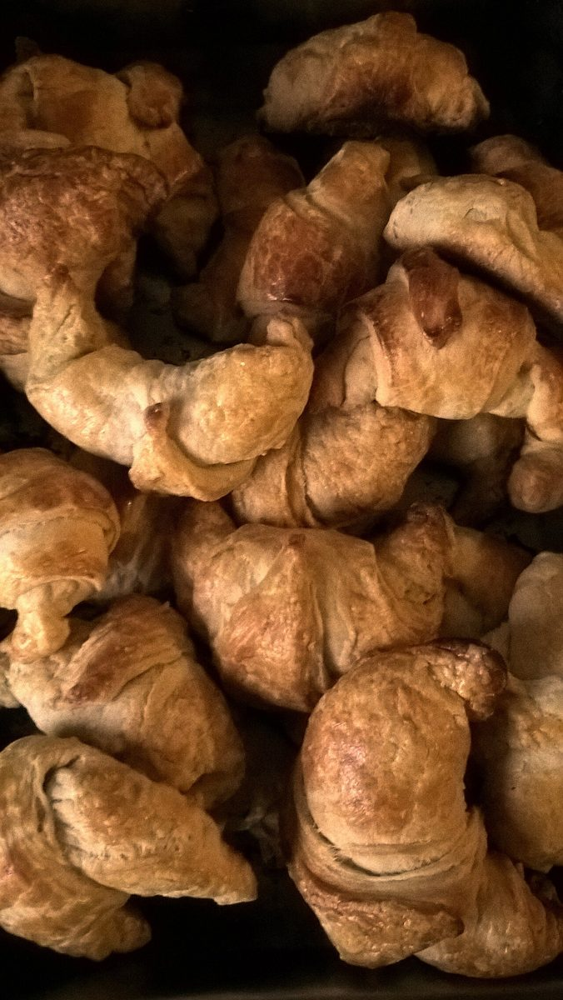

店のこと
店のこと
お店について確認できているのは、所在地・電話番号・Instagramのアカウントだけです。
このページの「想像してみる」部分は、制作側が想像して書いたものです。お店の実際の様子・考え・メニューとは関係がありません。
確認できていること
- 店名は「FUTAGO cafe」、業種はカフェ
- 所在地は山口県長門市仙崎祇園町4137-2(〒759-4106)
- 電話番号は0837-26-2222
- Instagramのアカウントは @futagocafe
- 営業時間・定休日・メニュー・価格・ご予約・駐車場は準備中

想像してみる
「FUTAGO」という綴りから
由来は分かりません。制作側は、ふたつでひと組になるものを思い浮かべました。たとえば、豆とパンのように、並べると互いを引き立てそうな組み合わせです(実際のお店の姿ではありません)。そこでこのサイトでは、双子素数のペアを番号にして、写真も二枚ずつ並べています。